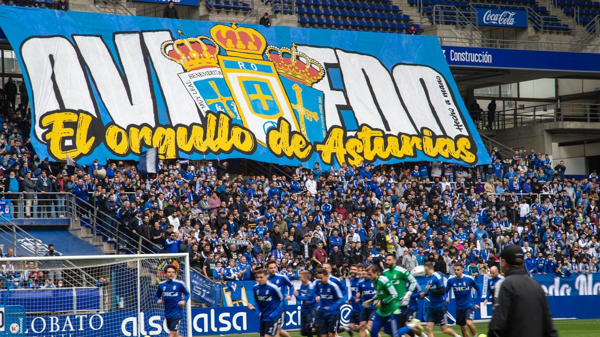

- Aficiones -
Real Oviedo y OCB
Por suerte o por desgracia, ir al Carlos Tartiere y a Pumarín son un clásico en mis fin de semanas. No ganarán ningún partido pero al menos me entretienen
Viajar
En cuanto tengo unos días libres intento organizar un viaje y si no, a disfrutar de los paisajes que ofrece Asturias... siempre que el tiempo lo permita
Leer
Cuando estoy en casa y tengo algo de tiempo libre lo último que quiero es tener una pantalla cerca. Los libros de fantasía y ciencia ficción son mi perdición
Deporte

La vida del informático implica demasiadas horas sentado, nada mejor que hacer deporte, ya sea gimnasio, una pachanga o una vuelta en bici.